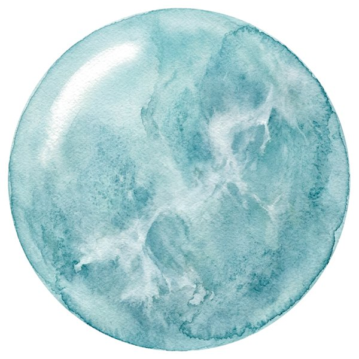
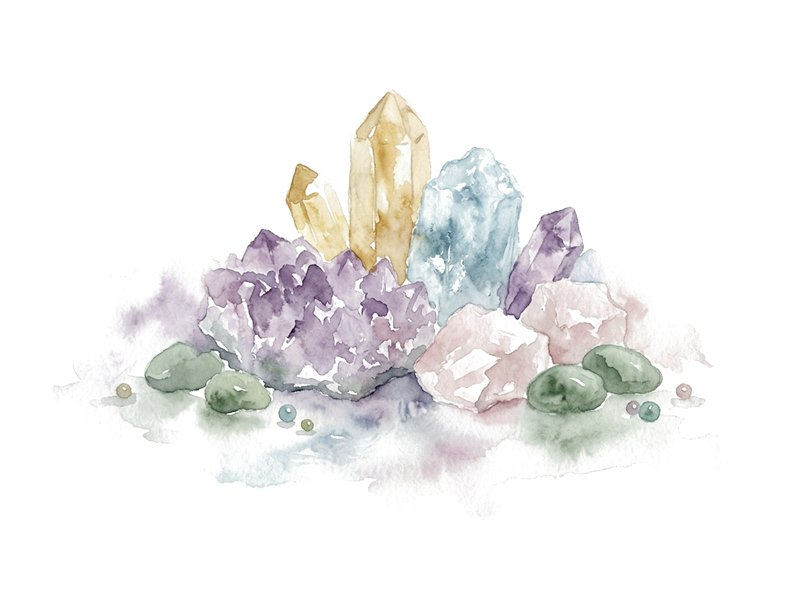

เรื่องของหิน เล่าตามจริง
ความหมายของหินแต่ละชนิดตามความเชื่อไทย วิธีดูว่าแท้ไหม หินประจำวันเกิด และคู่มือไหว้ช่วงเทศกาล เขียนโดยทีม Silamani

โรสควอตซ์ ความหมายตามความเชื่อ และวิธีดูว่าแท้ไหม
หินของความรักและความอ่อนโยน สีประจำวันอังคาร พร้อมตารางเทียบหินธรรมชาติ หินย้อมสี และแก้ว ก่อนตัดสินใจซื้อ
อ่านบทความบทความล่าสุด
เรียงจากใหม่สุด
อเมทิสต์ ความหมายตามความเชื่อ และหินคู่ที่เข้ากัน

หินประจำวันเกิดทั้ง 7 วัน เลือกยังไงให้เข้ากับดวง

ป้ายใต้กำไลบอกอะไร ธรรมชาติ ปรับปรุง และสังเคราะห์

อความารีน หินสีน้ำทะเล ความหมายตามความเชื่อ

กำไลหินเส้นแรก วัดข้อมือ และเลือกเม็ดให้พอดี
24พฤศจิกายน 2569พ.ย.คืนวันลอยกระทง
ลอยกระทงขอขมาพระแม่คงคา เตรียมอะไรบ้าง ฉบับเช็กลิสต์
ยังไม่มีบทความที่ตรงกับคำค้นนี้ ลองพิมพ์ชื่อหิน หรือเลือก "ทั้งหมด"
ดัชนีหิน ก–ฮ
หินทุกชนิดที่ร้านเขียนถึง เรียงตามตัวอักษร กดชื่อหินเพื่ออ่านความหมายและวิธีดูว่าแท้ไหม